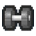

Сила значно збільшує ваш шкоди в боях і збільшує ваше загальне здоров'я. Його можна збільшити, потренувавшись на тренажерах для підняття важких предметів, тренувальних матах або боксерською грушею в тюремній зоні. Це гарна ідея, щоб нарощувати свої сили, щоб ви могли бити сильніше і довше жити в боях. Як і інші характеристики, вони будуть зменшуватися з часом і в поодинці, тому важливо продовжувати працювати постійно (~ 25 повторень кожен день має бути добре), щоб підтримувати себе у відмінному стані. Щоб боротися краще, у вас також повинна бути висока швидкість. Силові тренування швидко підвищать ваш рівень стомлюваності, змушуючи вас чекати, приймати душ, приймати їжу під час їжі, вживати щось, що знижує стомлюваність, або спати в темряві.
Сила - підвищується в спортзалі, впливає на фізичний шкоди персонажа.
Одна з найбільш важливих характеристик персонажа - його сила. Вона визначає максимальне здоров'я і то, як сильно гравець може бити. Високий показник даного параметра буде корисний у бійках, дозволить постояти за себе в будь-який момент. Тому качати даний скилл необхідно в першу чергу. Однак виникає питання, яким чином можна підвищити силу?Відповідь досить проста - потрібно знайти спортзал, підійти до будь-якого тренажера (наприклад, до штанги) і клікнути по ньому. Після того як персонаж підійде до тренажера, необхідно по черзі натискати «Q» і «E». Згодом (за кожні 2 підняття штанги), буде збільшуватися сила, а разом з нею і втому, тому не варто перевантажувати себе.Слід пам'ятати, що гойдатися в The Escapists потрібно постійно, тому що якщо почати, а потім кинути цю справу, значення сили буде поступово зменшуватися. Якщо потрібен сильний і здоровий персонаж - слід частіше навідуватися в спортзал.
Як було сказано вище, сила безпосередньо впливає на максимальне здоров'я персонажа. Максимально можливе значення сили - 100, а здоров'я - 50. Значить, за кожні два значення мощі життя збільшується на один пунктир. Всього в грі 3 основні характеристики - це сила, швидкість і інтелект. Рівень прокачування кожного з них можна дізнатися після натискання клавіші «Р» (відповідно до англійської розкладкою).
Як уже згадувалося, прокачування сили безпосередньо впливає на здоров'я. Так як The Escapists поки що перебуває на стадії альфа-тестування, в грі присутня невелика хитрість. На початку відбування терміну покарання можна «забити» на всі інші параметри, займаючись виключно підвищенням параметра сили. Тільки гойдатися в The Escapists в даній галузевої сфері необхідно якомога швидше. Коли персонаж стане сильним, можна йти битися - з усіма підряд. Ніякі охоронці, а вже тим більше ув'язнені не зможуть перешкодити головному герою. Головне - не варто забувати час від часу навідуватися в спортзал, щоб підтримувати себе у формі. Безумовно, в майбутніх патчах цю хитрість приберуть, ну а поки можна насолоджуватися тюремними заворушеннями.